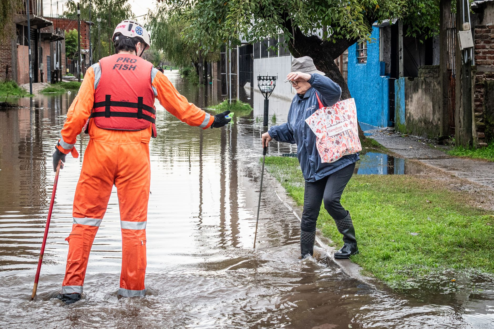

A miraculous survival in Nepal
The recent monsoon season in Nepal has brought unprecedented levels of rainfall, leading to devastating floods and landslides across several mountainous regions. While the scale of the destruction is immense, the story of a nearly century-old woman surviving the onslaught has become a symbol of human resilience. As the waters rose rapidly, many feared the worst for the elderly residents in the most vulnerable villages.
Witnesses and rescue teams describe a scene of chaos where the landscape was being reshaped by mud and torrents. Amidst this devastation, the survival of a 97-year-old woman seemed nearly impossible. Her ability to endure the physical and emotional trauma of the flood has left local communities in awe, turning a tragedy into a narrative of incredible strength.
The rescue operation details
Rescue teams, composed of local volunteers and emergency services, worked tirelessly under dangerous conditions to reach those stranded by the rising tides. The terrain in these parts of Nepal is notoriously difficult, making every rescue mission a high-stakes gamble against time and nature. The mission to locate the elderly woman required navigating through debris-strewn paths and unstable ground.
Once located, the rescue was described as a delicate operation. The woman was found in a state of extreme vulnerability but remained conscious and alert. The coordination between the local authorities and the ground teams was crucial in ensuring she was moved to a safe location without further injury.
A warrior spirit in the face of disaster
Those who witnessed the rescue could not help but comment on the woman's demeanor. Despite the terror of the situation, she displayed a level of grit that many younger survivors lacked. This spirit is what led observers to use the term warrior to describe her experience.
She looked like a warrior, standing firm against the elements even when the world around her was washing away.
This sentiment highlights a broader theme of survival often seen in the Himalayan regions, where people have lived in harmony with—and in defiance of—harsh natural elements for generations. Her survival is not just a stroke of luck, but a testament to the mental fortitude that can exist even at the end of a long life.
The wider impact of the Nepal floods
While the story of the 97-year-old provides a glimmer of hope, the broader reality in Nepal remains grim. The floods have displaced thousands of families, destroyed vital infrastructure, and wiped out entire agricultural plots that communities rely on for food security. The economic impact on the region is expected to be felt for years to come.
Climate change is increasingly cited as a factor in the intensifying monsoon patterns in the region. As the weather becomes more unpredictable, the risk of such catastrophic events increases, putting even more pressure on the already limited resources of the Nepalese government and international aid agencies.
Looking toward recovery and safety
As the water levels slowly recede, the focus is shifting from immediate rescue to long-term recovery. Aid organizations are working to provide clean water, food, and medical supplies to those who have lost everything. The challenge lies in reaching the most remote areas where the damage is most severe and the access is most limited.
The resilience shown by individuals like the 97-year-old woman serves as an inspiration for the rebuilding process. However, inspiration must be met with tangible support. International cooperation will be essential to help Nepal rebuild its infrastructure and implement better disaster preparedness strategies to protect its citizens from future floods.
In the midst of this ongoing crisis, it is important to stay informed about all aspects of the disaster. For those following the broader implications of the weather events in the region, you may also want to read our report on the Search for 33 Missing British Nationals in Nepal to understand the full scale of the human impact.
See Also
If you enjoyed this Current Events article, check out Search for 33 Missing British Nationals in Nepal for more useful reading.